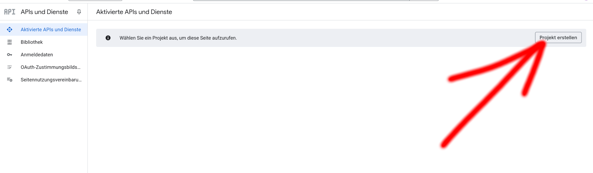
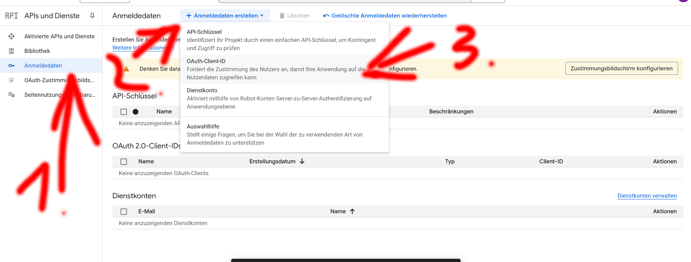
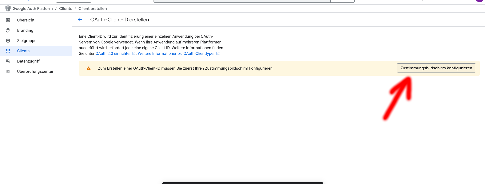
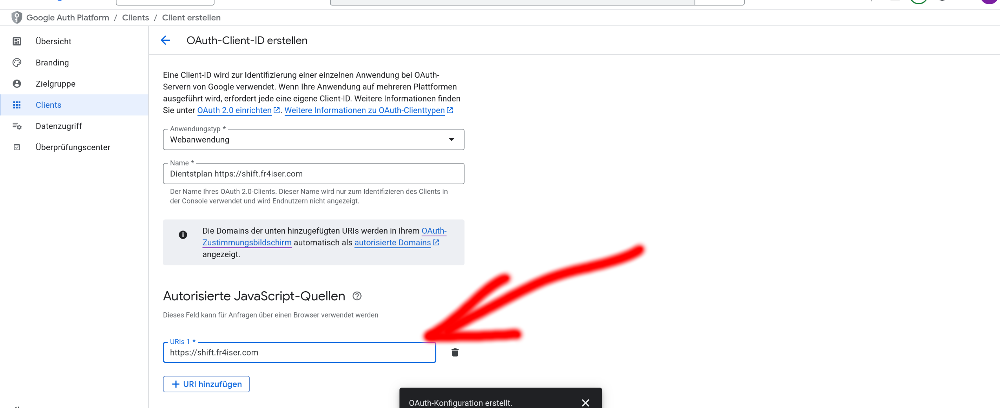
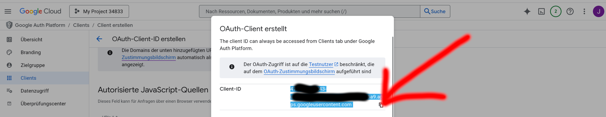
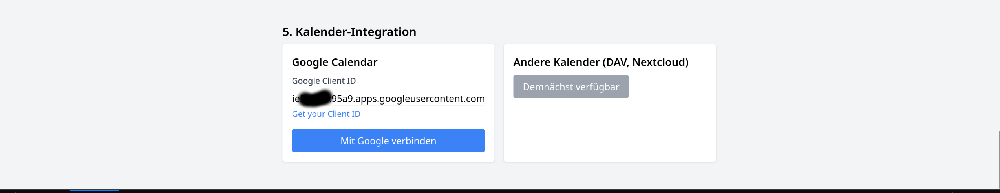

Diese Anleitung zeigt dir, wie du eine Google Client ID erstellst und das Tool sicher mit deinem Google Kalender verbindest. Wichtig: Deine Daten bleiben immer lokal im Browser!
Datenschutz & Privatsphäre:
Auch wenn du die Google App als "extern" registrierst, bleiben deine Daten privat. Nur du selbst (bzw. die von dir eingetragenen Testnutzer) können die App nutzen. Niemand außer dir hat Zugriff auf deinen Dienstplan oder Kalender. Die App dient ausschließlich der Google-Authentifizierung – deine Daten werden niemals öffentlich oder für andere sichtbar.
Neues Projekt anlegen
Klicke links oben auf das Projekt-Dropdown und dann auf Neues Projekt.

APIs & Dienste aktivieren
Wähle im Menü APIs & Dienste und aktiviere die Google Kalender API für dein Projekt.

OAuth-Zustimmungsbildschirm konfigurieren
Gehe zu APIs & Dienste → OAuth-Zustimmungsbildschirm.
Wähle Extern als Nutzertyp (auch wenn du keine Organisation hast). Gib die erforderlichen Informationen wie App-Name, Support-E-Mail und ggf. Branding ein. Trage nur die nötigsten Daten ein, Abrechnung ist nicht erforderlich. Die App bleibt privat und ist nur für dich bzw. eingetragene Testnutzer sichtbar.

OAuth-Client-ID erstellen
Gehe zu Anmeldedaten und klicke auf Anmeldedaten erstellen → OAuth-Client-ID.
Wähle als Anwendungstyp Webanwendung und gib einen Namen ein (z.B. "Dienstplan Konverter"). Wichtig: Für die Nutzung im Browser – egal ob am Desktop oder auf dem Handy – muss immer "Webanwendung" gewählt werden. Andere Typen wie "Desktop" oder "Andere" funktionieren nicht im mobilen Browser!

Autorisierte JavaScript-Quellen eintragen
Füge https://shift.fr4iser.com als autorisierte Quelle hinzu. Wenn du das Tool selbst hostest, kannst du auch http://localhost:8080 eintragen. Achte darauf, dass die autorisierten JavaScript-Quellen und Redirect-URIs exakt mit der URL übereinstimmen, unter der du das Tool im Browser (auch am Handy) aufrufst.

Client ID kopieren & im Tool eintragen
Nach dem Erstellen wird dir die Client ID angezeigt. Kopiere sie und trage sie im Tool im Feld Google Client ID ein.

Zugriff erlauben & Kalender synchronisieren
Folge den Anweisungen im Tool, um den Zugriff zu erlauben und deine Kalendereinträge zu synchronisieren.
FAQ
Das Google-Login-Fenster (Modal) lädt auf dem Handy nicht – was tun?
Prüfe, ob du als Anwendungstyp wirklich Webanwendung gewählt hast und die autorisierten JavaScript-Quellen sowie Redirect-URIs exakt mit der URL übereinstimmen, die du im mobilen Browser verwendest (z.B. https://shift.fr4iser.com).
Stelle sicher, dass Popups im Browser erlaubt sind und versuche ggf. den Cache zu leeren. Bei Self-Hosting muss die lokale Adresse (z.B. http://localhost:8080) ebenfalls eingetragen sein.
Was bedeutet "Extern" bei der Google App?
"Extern" ist nur ein technischer Begriff für die App-Registrierung. Deine Daten bleiben privat. Nur du (bzw. eingetragene Testnutzer) können die App nutzen. Niemand sonst sieht deinen Dienstplan oder Kalender.
Werden meine Daten hochgeladen oder veröffentlicht?
Nein, alles bleibt lokal im Browser. Es werden keine Daten an einen Server oder Dritte übertragen.
Warum brauche ich eine Google Client ID?
Damit Google weiß, welche App auf deinen Kalender zugreifen möchte und du die Kontrolle über die Berechtigungen hast.
Kann ich das Tool ohne Google nutzen?
Ja, du kannst auch nur die Konvertierung und den CSV-Export nutzen.
Self-Hosting & Quellcode
Du möchtest das Tool selbst hosten oder anpassen? Den Quellcode findest du auf GitHub: GitHub Repository
Die Screenshots dieser Anleitung findest du im assets-Ordner. Für Self-Hosting einfach die HTML-Datei und den assets-Ordner gemeinsam verwenden.